World Robot Olympiad
Judge, mentor and organiser across the 2024 and 2025 seasons, assessing regional teams and running the full competitive programme.
Nairobi, KenyaAsk me how organisations turn skills, data and AI into proven results
STEM, EdTech & Digital Transformation Leader
Most programmes measure activity. I build for evidence. I design the digital skills and STEM pathways that move people into paid work, then build the data, AI and security systems that prove the result and protect it. That range runs across education, conservation, finance and software: 5,000+ learners reached, 798+ teachers trained across 23+ schools, and backend platforms serving 50,000+ users.
About
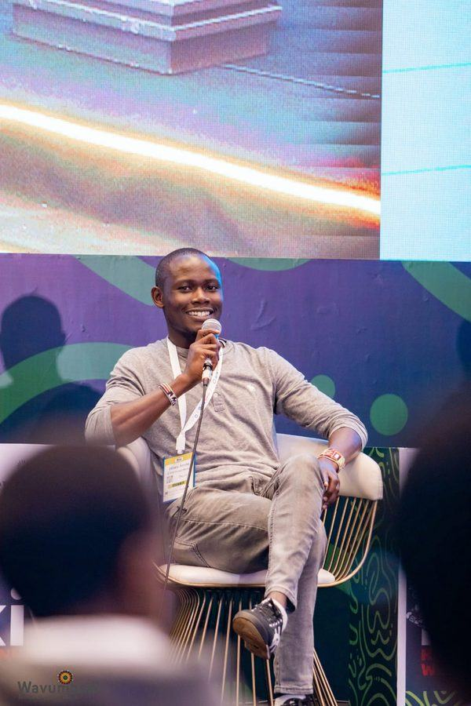
The test is simple: what still runs after I leave. I lead EdTech and digital skills work where access is thinnest, across pastoralist, rural and underserved Kenya. Through the HPF ICT Academy I run programmes end to end: recruitment and onboarding, curriculum grounded in Learning Through Play (LTP) and Social Emotional Learning (SEL), training delivery, monitoring and evaluation, and the impact reporting funders rely on. A recent cohort of 26 trainees closed at a 95% pass rate with 86% completion, and graduates are already earning verified income through digital work platforms. Which is the point: skills that convert directly into household income. What outlasts me is the infrastructure underneath, the curricula another trainer can pick up, the standard operating procedures I wrote for the schools programme, the AI-assisted learning platforms, and the Salesforce and Power BI systems that keep reporting long after I have moved on.
Core Competencies
Full lifecycle ownership that ships cohorts, not plans: curriculum, cohort architecture, LTP and SEL frameworks, Human-Centered Design
Salesforce CRM, Power BI, SPSS, KPI frameworks, donor analytics, data-protection compliance
AI-assisted learning platforms, workflow automation, AI literacy curricula for teachers and learners
Attack-surface hygiene, safeguarding online learners, Microsoft 365 security & staff training
Funder and INGO relations, partner management, community organising, Trainer of Trainers networks
Concept notes, donor proposals, budget development, impact reporting
STEM Leadership
STEM is where I have pushed hardest. I judge and run national robotics competitions, bring AI literacy to teachers who had never touched it, and open the pipeline for girls in science and technology. The work targets the learners the sector usually skips: pastoralist, rural and low-resource classrooms.
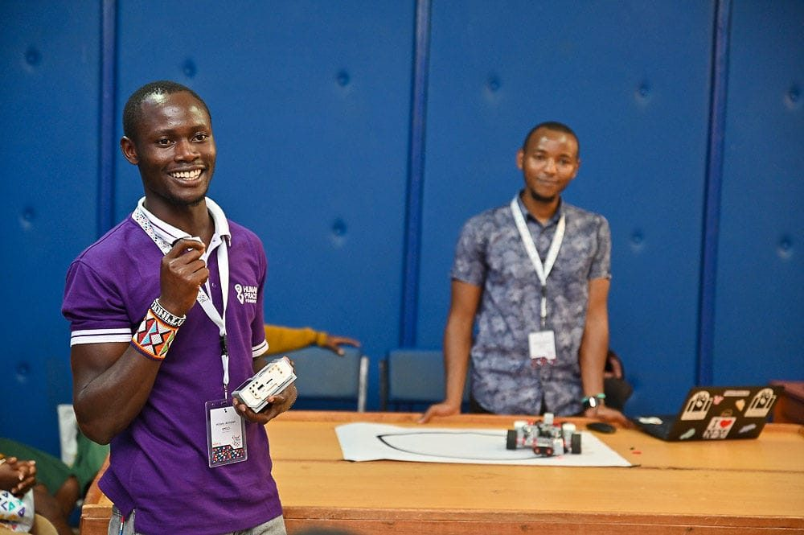
Judge, mentor and organiser across the 2024 and 2025 seasons, assessing regional teams and running the full competitive programme.
Certified through the Raspberry Pi Foundation and Google DeepMind, then took AI literacy into classrooms so teachers can teach it themselves.
Outreach and partnerships that moved 300+ girls into STEM mentorships and routes toward sustainable science and technology careers.
Featured on NTV EdTech Mondays with the Mastercard Foundation and EdTech East Africa for robotics access work.
Co-facilitated robotics and sustainability sessions, equipping regional educators to run STEM activities without outside help.
Recognised by the UN System Staff College and UNEP for technology-led sustainability work, now advising Watoto Go Green on climate learning.
Experience
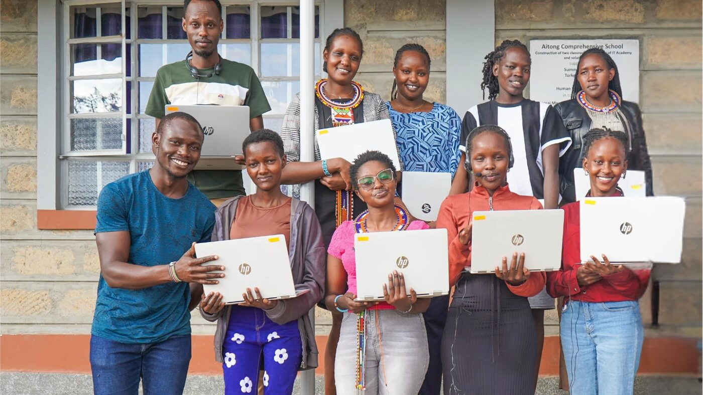
Human Practice Foundation · Maasai Mara, Kenya
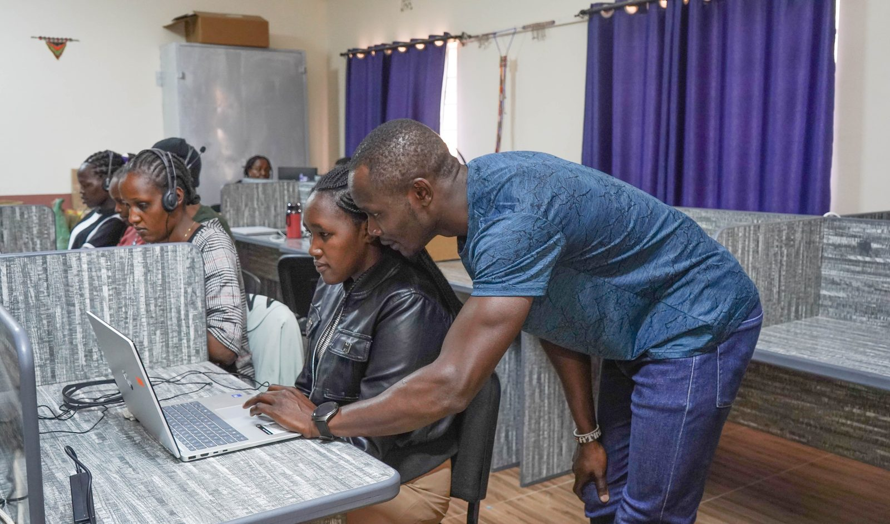
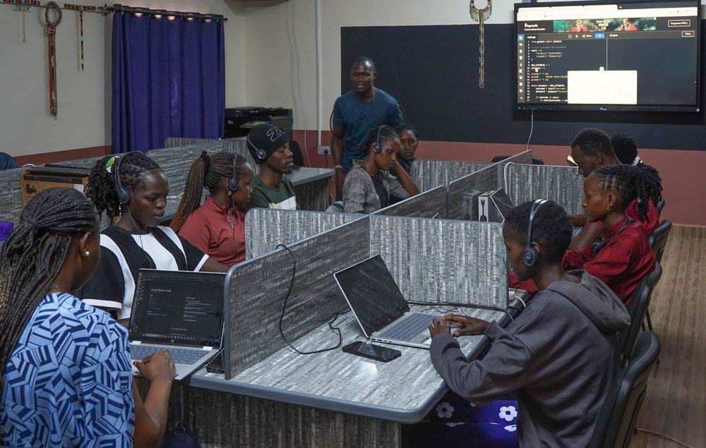
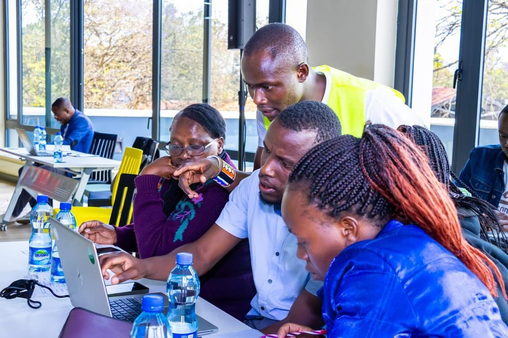
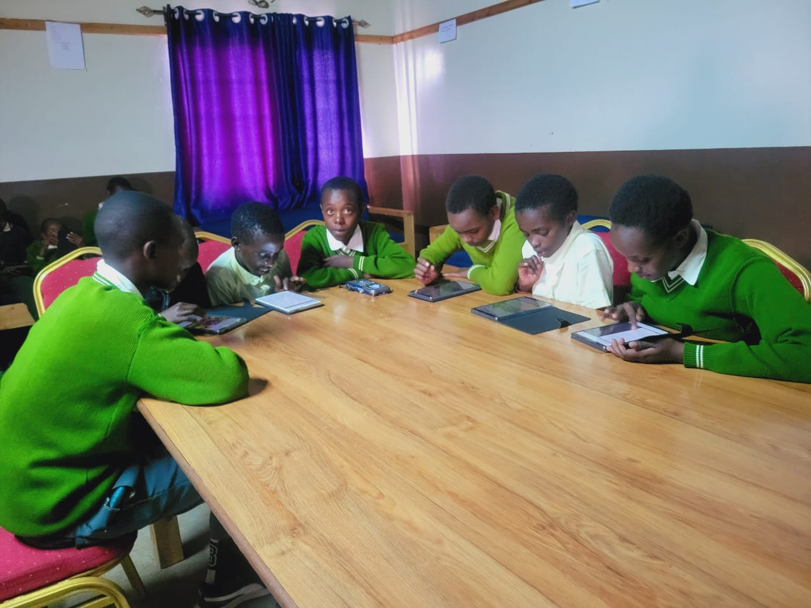
Human Practice Foundation · Mount Kenya Region, Kenya
The Lewa Wildlife Conservancy · Isiolo, Kenya
Alatpres Technologies · Kenya
Achievements & Recognition
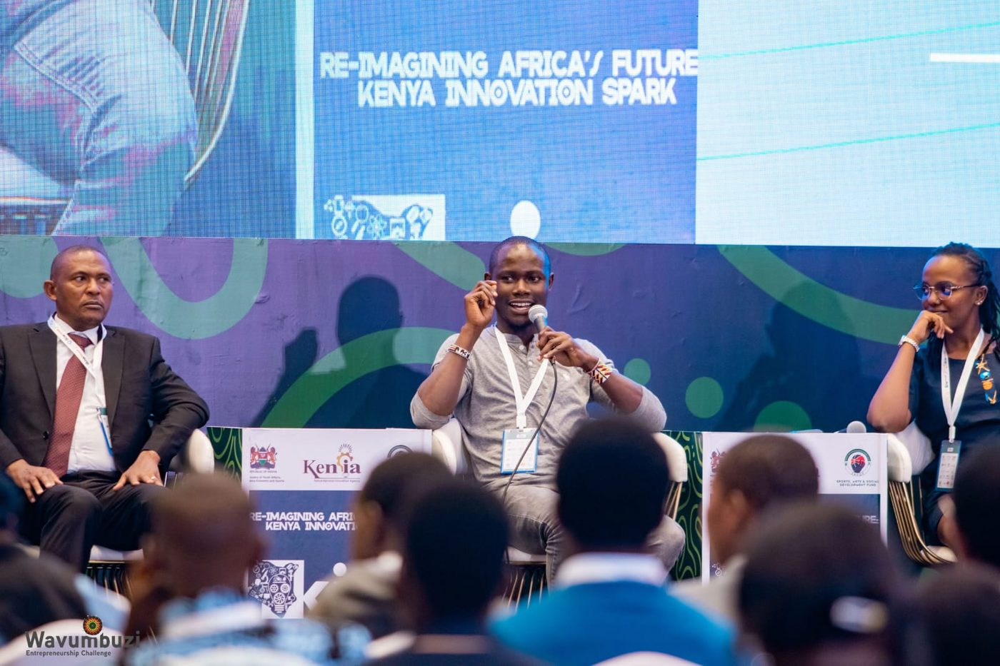
Rural digital access argued on a national stage, not just delivered in the field.
Speaking on the Re-imagining Africa’s Future panel, convened with the Kenya National Innovation Agency and the Wavumbuzi Entrepreneurship Challenge.
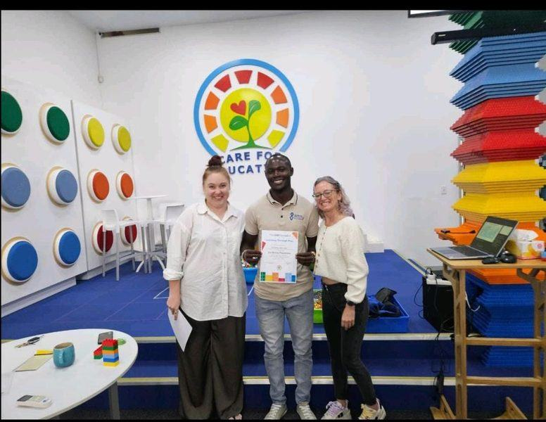
The accreditation behind 798+ teachers trained in play-based learning.
Accredited LTP facilitator; trained 798+ teachers and reached 5,000+ learners with play-based learning.
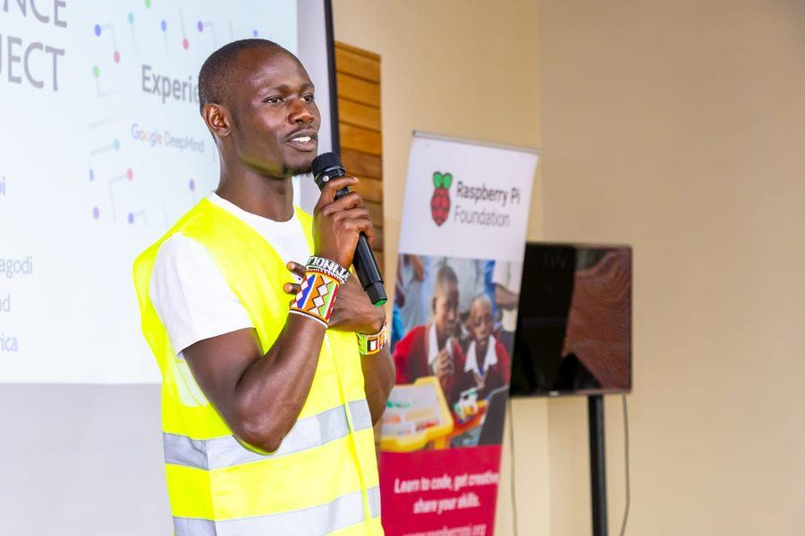
Teaching teachers to teach AI, so the curriculum outlives the workshop.
Featured on NTV EdTech Mondays (Mastercard Foundation & EdTech East Africa).
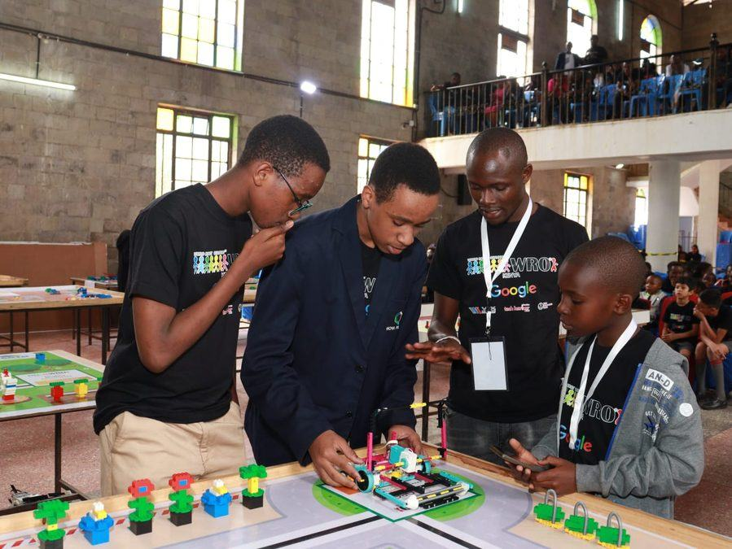
Judging the World Robot Olympiad, where rural teams prove they belong on the national stage.
Judge, mentor and organiser who assessed regional teams and ran the full competitive programme.
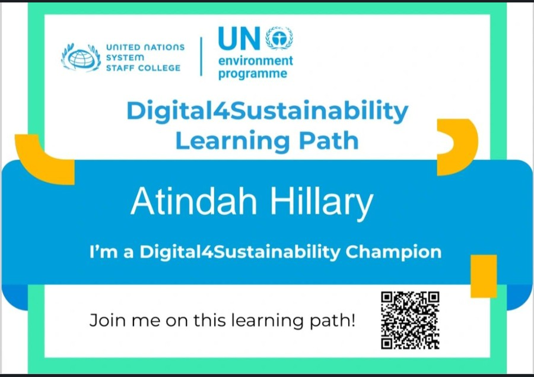
Recognition from the UN System Staff College and UNEP, earned on the sustainability of the technology itself.
Recognised by the UN System Staff College & UNEP for technology-led sustainability work.
Injini & EdTech Hub Kenya entrepreneurship competition finalist.
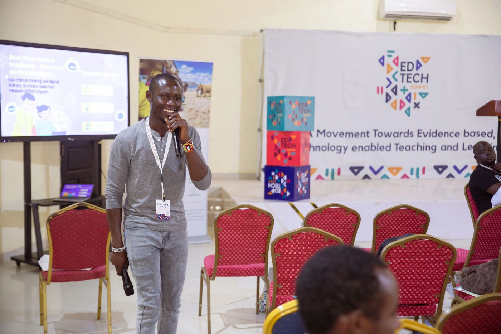
Teachers stopped being the audience for EdTech policy and started drafting it.
Facilitated the Teachers’ Townhall, putting educators in four seats they are rarely offered: problem solver, EdTech designer, policy maker and researcher. Every idea was tested against one bar: simple enough to replicate, aligned to the school system, and showing evidence that learning improved.
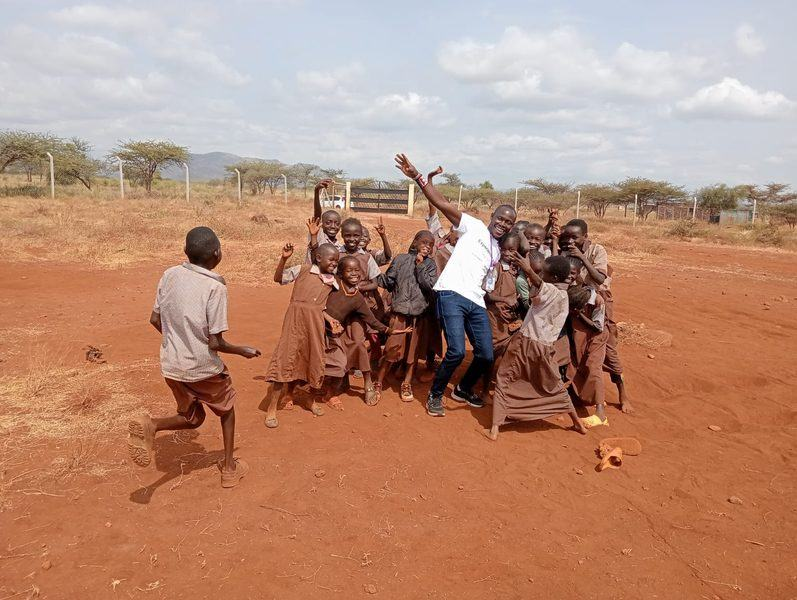
Five hundred mentees on, primary and secondary, and still counting.
Primary and secondary students mentored through school programmes and the I Choose Life SEALS programme in Meru.
Certifications
Community Leadership & Advisory
Lead outreach and partnerships that have reached 300+ girls through STEM mentorships and school collaborations.
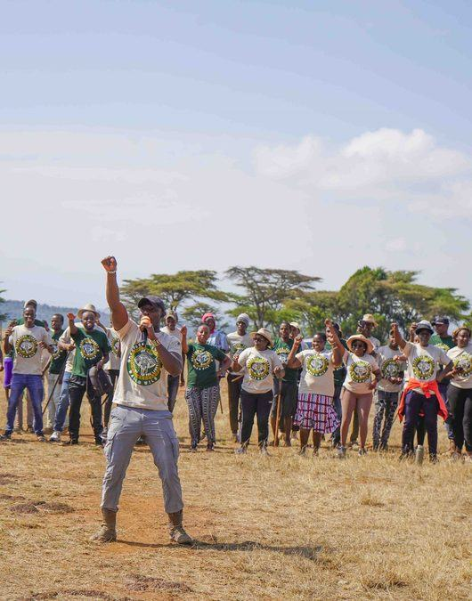
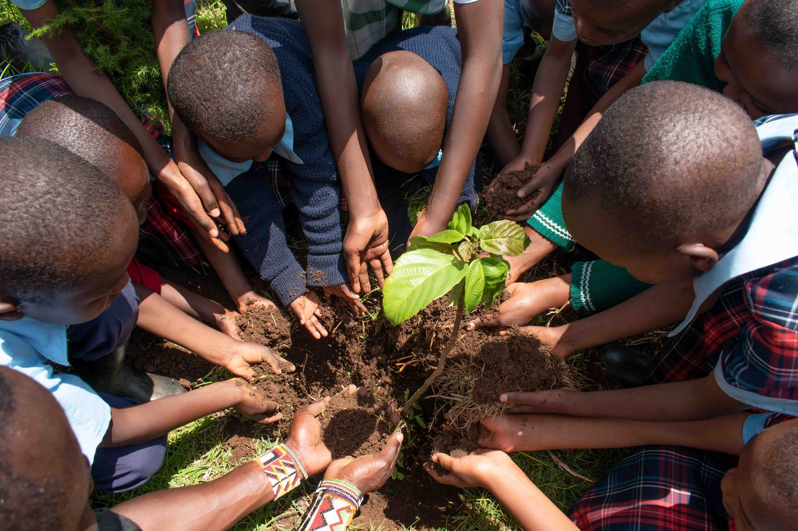
Walking with the communities of Mukogodo in support of indigenous-led conservation, backing the custodians who keep East Africa's largest indigenous dry forest standing.
Conservation holds only when the community leads it. Walking with Mukogodo's custodians.
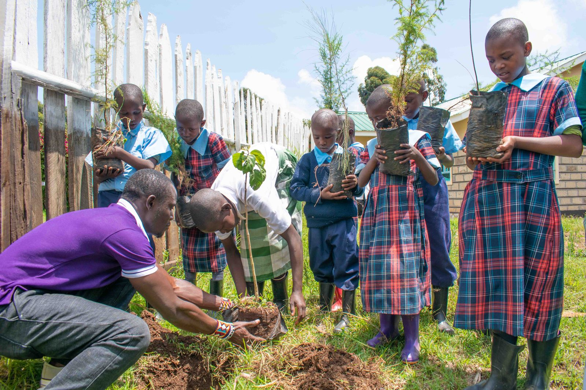
Advise on programme structure and implementation, embedding arts and technology into climate learning so young people turn environmental awareness into practical, community-level action.
Develop and implement inclusive, disability-responsive policies for the Deaf community, making GBV prevention and response, digital learning and employment pathways genuinely accessible to Deaf youth.
Promoting robotics and EdTech tools across Kenya through summits, trainings and ecosystem-building with partners including the Raspberry Pi Foundation and Bunifu Youths Kenya.
Mentored young people through the SEALS programme in Meru, building life skills, leadership and healthy transitions into work.
Part of the Young African Leaders Initiative network, with training in grant writing, civic leadership and public management.
Consultancy & Collaboration
Founders, CEOs and programme leads bring me in when a digital skills or EdTech initiative has to produce evidence, not activity. I have run these programmes from recruitment through to funder reporting, and I build the systems that prove the outcome. Engagements run as short advisory sprints or full delivery.
Turn an idea or grant commitment into a running cohort: curriculum, selection, delivery model and the LTP and SEL frameworks underneath it.
Salesforce and Power BI systems, KPI frameworks and donor analytics that turn learner data into reporting funders act on.
Trainer of Trainers models that scale past the workshop, proven across 798+ teachers in 23+ schools.
AI-assisted learning platforms, workflow automation and AI literacy curricula built for low-bandwidth, low-resource settings.
Attack-surface hygiene, safeguarding for online learners, Microsoft 365 security and the staff training that makes it hold.
Concept notes, donor proposals, budgets and impact narratives that convert into funded programmes.
Currently available for consultancy, advisory seats and partnership across East Africa, on-site or remote.
Start a conversationGet In Touch
I partner with funders, INGOs, EdTech builders and founders investing in digital skills and youth innovation across East Africa. Bring me a programme to design, a cohort to scale or an impact system to build, and I will show you the numbers it produced.
📍 Nairobi, Kenya · Available on-site & hybrid · References available upon request